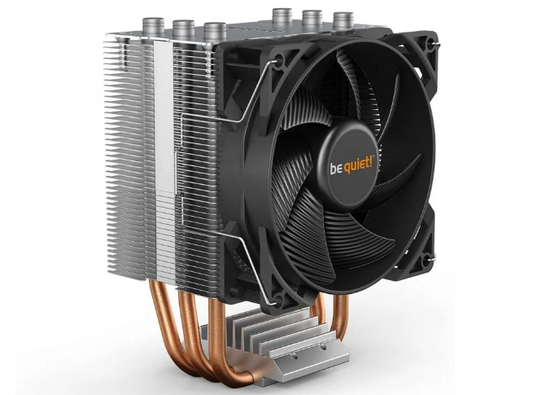

Disipador de calor de CPU

Hasta los más básicos circuitos a base de semiconductores suelen
recalentarse (transistores, circuitos integrados, etc.), y por
ello, los microprocesadores son más propensos aún a este
problema.En consecuencia, esto debe ser disminuido para el
buen funcionamiento, de allí el necesario enfriamiento del
CPU, que consiste en retirar ese excesivo calor del
componente electrónico, en este caso la CPU. Y cada vez
se hace más necesario un sistema de refrigeración más
eficiente, debido a las altas frecuencias que manejan
estos componentes.
El enfriamiento de la CPU se hizo necesario incluso antes de
la aparición de los primeros Intel Pentium y Pentium MMX,
debido al calor generado por la frecuencia de reloj que
incrementaba con el avance de los microprocesadores. Por
aquellos años se solía retirar el calor mediante un disipador
que lo conducía hasta sus puntas liberándolo al exterior.
El aumento cada vez más rápido de la temperatura, hizo
necesaria la incorporación de un ventilador al disipador,
para acelerar el proceso de enfriamiento.
A ese método de enfriamiento se le llama «refrigeración por aire»,
y se utiliza para enfriar no solo procesadores, sino cualquier
componente electrónico que genere un calor excesivo.
Hoy en día existe el método de refrigeración líquida que consiste
en hacer fluir un líquido refrigerante dentro de un sistema
cerrado de conductos, que hacen contacto directo con los
componentes a enfriar. Este sistema es evidentemente más
efectivo que la refrigeración por aire, y se utiliza
especialmente para enfriar procesadores en los que se
practica el overclock.